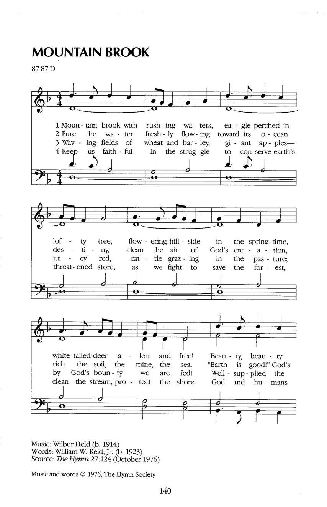

|
|
【崇山清溪】 |
|
1 Mountain brook with rushing waters,
2 Pure the water freshly flowing
3 Waving fields of wheat and barley,
4 Keep us faithful in the struggle |
崇山清溪急流潺潺，鷹鳥棲息高樹上， |
|
https://www.hopepublishing.com/find-hymns-hw/hw3824.aspx
 |
|
|
|
|
-

https://youtu.be/pImL4q6Pvws
| Text: | Mountain Brook with Rushing Waters |
| Author: | William W. Reid, Jr. |
| Tune: | BLAENWERN |
| Composer: | William Rowlands |
| Short Name: | William Watkins Reid |
| Full Name: | , 1923-2007 |
| Birth Year: | 1923 |
| Death Year: | 2007 |

William W. Reid, Jr. (1923-2007), after graduating from Oberlin College and Seminary and Yale Divinity School served for more than fifty years as pastor in the Wyoming Conference in rural and inner-city Methodist churches. He served on the Executive Committee of The Hymn Society of America. He was involved in social issues, serving as a councilman and county commissioner. His hymns are widely published in hymnals of many denominations.
Mary Louise VanDyke
===============================
William W. Reid, Jr. is pastor of the Methodist Church Circuit at Carverton,
Pennsylvania. He previously served in a similar capacity at Camptown in the
same State. He is a graduate of the Yale Divinity School and Oberlin
College. He served during World War II in the Medical Corps and was held
prisoner by the Germans for eight months. He is the author of several hymns
including those in "Fourteen New Rural Hymns" and "Twelve New World Order
Hymns" published by the Hymn Society.
----Fifteen New Christian Education Hymns, 1959. Used by permission.
http://www.hymntime.com/tch/bio/r/e/i/d/reid_ww_jr.htm
Tune Information
| Title: | BLAENWERN |
| Composer: | William Penfro Rowlands (1905) |
| Meter: | 8.7.8.7 D |
| Incipit: | 55665 13321 7655 |
| Key: | F Major |
| Copyright: | Public Domain |
REID, William Watkins, Jr. b. 12 November 1923. d. 27 March 2007. Reid was
the son of William Watkins Reid, Sr.* (1890-1983), former secretary of the
Hymn Society of America. Reid Jr was educated at Oberlin College and Yale
Divinity School. He served in World War II with the US Army Medical Corps,
during which he was for some time a prisoner of war. He became an ordained
elder in the Methodist Church of America, serving in North Dakota and at
Wyoming, Pennsylvania. He was District Superintendent of Wilkes-Barre,
Pennsylvania. His best known hymn in Britain, and probably also in the USA,
is ‘Help us, O Lord, to learn’*. Another of Reid’s hymns is found in some
Canadian hymn books: ‘O God of...